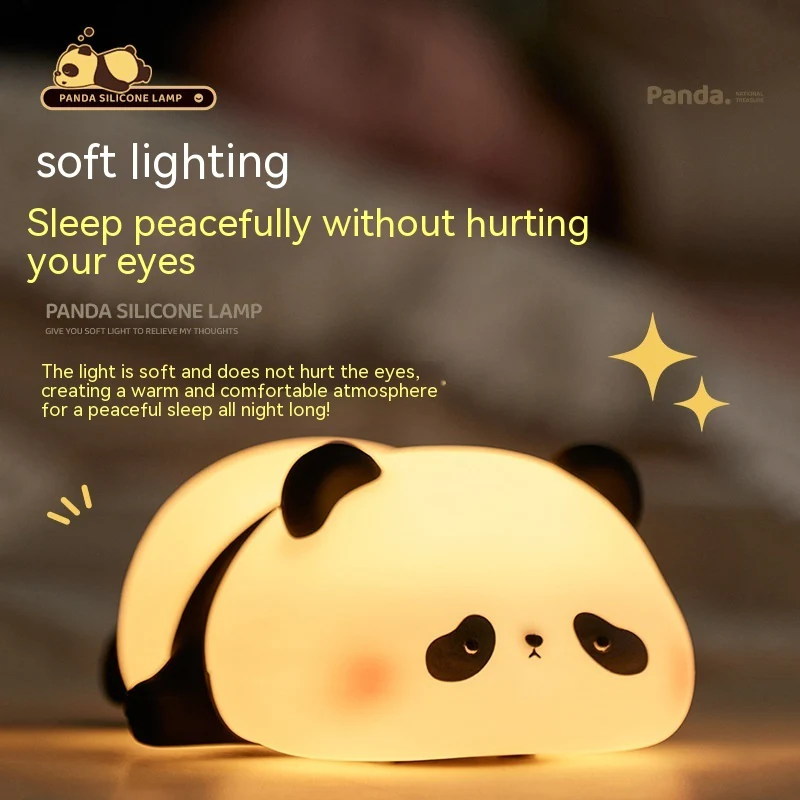

Welcome aboard!
We’re thrilled to have you.
Panda Light Night
price: $44.99
Base Material: Silicone
Switch Type: Touch
- DREAMING MY DREAM offers a world of enchantment and imagination with its diverse range of nightlights. From kids nightlights to animal night lights, friendship lamps to baby night lights for nurseries, DREAMING MY DREAM has something for every child. Let our collection of DREAMING MY DREAM nightlights illuminate your child's dreams, ignite their curiosity, and create a magical atmosphere in their room. Say goodbye to bedtime struggles and hello to the world of DREAMING MY DREAM - where imaginati
- DREAMING MY DREAM Kids Night Light: Unleash the Power of Imagination,Bedtime stories and cuddly toys are wonderful, but DREAMING MY DREAM takes it a step further. Our kids Silicone Lamp are not just ordinary Baby Lamp, they are companions that accompany your child through the night.
- Baby Night Lights for Nursery: Creating a Haven of Serenity. Welcoming a baby into the world is a joyous occasion, and their nursery should reflect that. DREAMING MY DREAM baby night lights are specially designed to create a calm and tranquil environment for your little one. The soft glow emitted by these nightlights helps soothe babies to sleep, while the adorable designs add a touch of whimsy to the nursery decor.